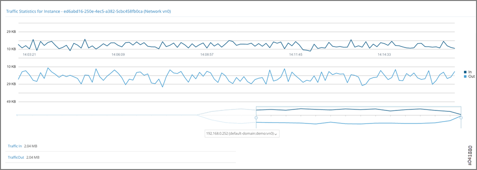
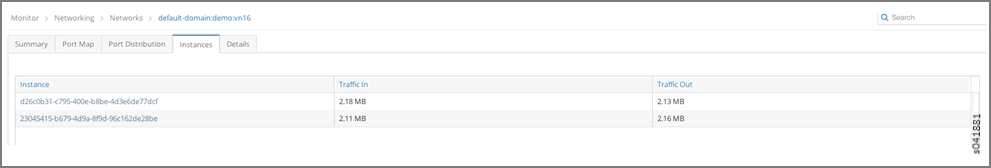
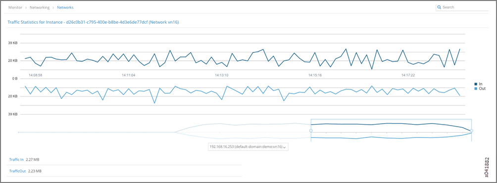
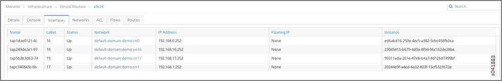
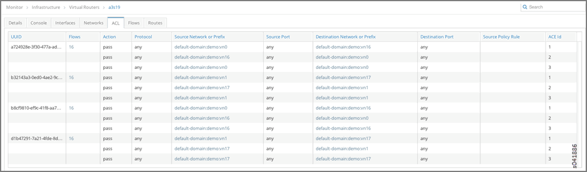
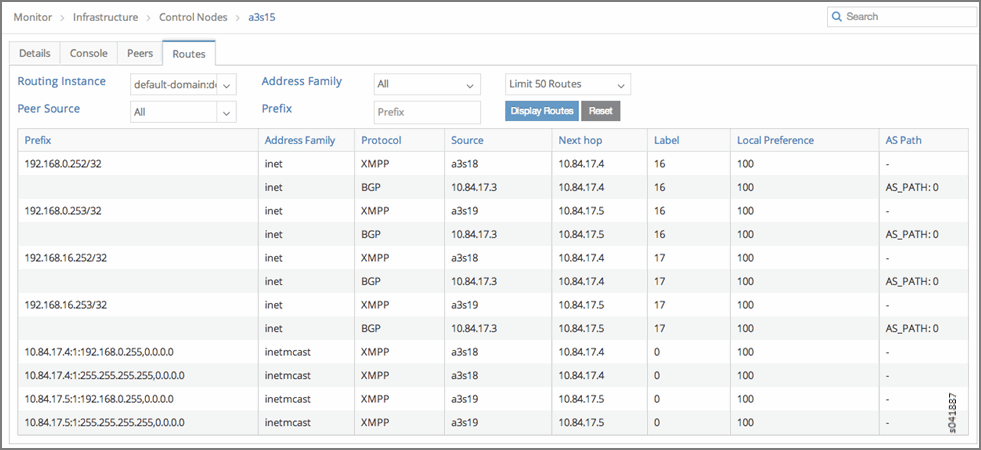
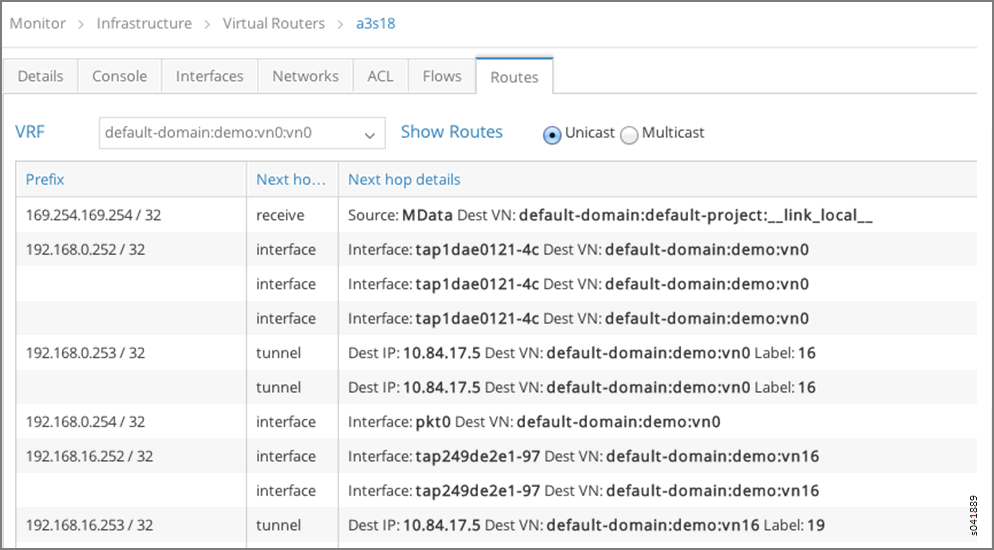

default-domain:demo:vn0, Instance ed6abd16-250e-4ec5-a382-5cbc458fb0ca with IP address 192.168.0.252 in the virtual network vn0. See Figure 1.

d26c0b31-c795-400e-b8be-4d3e6de77dcf
with IP address 192.168.0.253 in the virtual network vn16. See Figure 3 and Figure 4.

ed6abd16-250e-4ec5-a382-5cbc458fb0ca is
hosted on Virtual Router a3s18. See Figure 5.
d26c0b31-c795-400e-b8be-4d3e6de77dcf is hosted on Virtual Router a3s19. See Figure 6.
a3s18 and a3s19 have the ACL entries
to allow connectivity between default-domain:demo:vn0 and default-domain:demo:vn16 networks.
See Figure 7 and Figure 8.

default-domain:demo:vn0:vn0 and default-domain:demo:vn16:vn16. See Figure 9 and Figure 10.

default-domain:demo:vn0:vn0 on Virtual Router a3s18 has the appropriate
route and next hop to reach VRF default-domain:demo:front-end on Virtual Router a3s19. See Figure 11.
default-domain:demo:vn16:vn16 on Virtual Router a3s19 has the appropriate
route and next hop to reach VRF default-domain:demo:vn0:vn0 on Virtual Router a3s18. See Figure 12.
192.168.0.252 and 192.168.16.253) can be verified on
Virtual Routers a3s18 and a3s19. See Figure 13 and Figure 14.